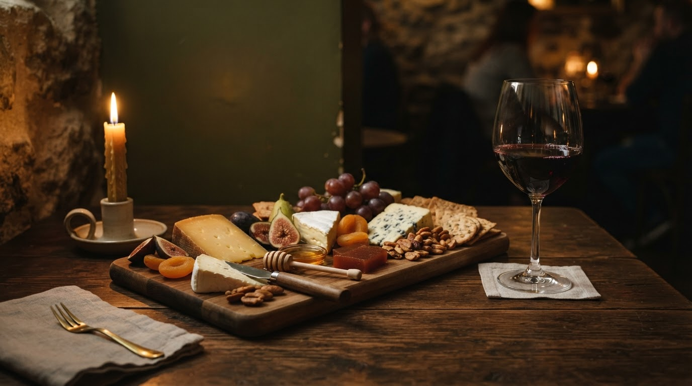

96% збіг
Червоне сухе
Одеський Чорний 2021
Потужні таніни зрізають маслянистість сиру, а лісові ягоди підкреслюють землистий смак.
Деталі розбору пари →
Крафтовий твердий сир з гірських полонин Карпат. Витриманий півтора року в кам'яних погребах. Має щільну кристалічну структуру та глибокий горіхово-пряний аромат, який вимагає гідного винного супутника.
Тримайте сир у вощеному папері в холодильнику за температури від 4 до 8 градусів. Перед дегустацією дістаньте його за 60 хвилин, щоб сир зігрівся та повністю розкрив свій смаковий профіль.
«Три покоління нашої родини працюють з овечим молоком на цих пагорбах. Ми не квапимо час: ми не виготовляємо сир масово, ми чекаємо, поки він дозріє сам у прохолоді карпатського підвалу. Цей сир має сильний характер полонинського вітру. Він не просить уваги — він її заслуговує з першого шматочка.»
Відібрані нашими експертами поєднання з найвищим Match Score.

96% збігПотужні таніни зрізають маслянистість сиру, а лісові ягоди підкреслюють землистий смак.
Деталі розбору пари → 94% збіг
94% збіг
Бурштинова терпкість та ноти цедри цитрусових створюють дивовижний пікантний дует.
Деталі розбору пари →